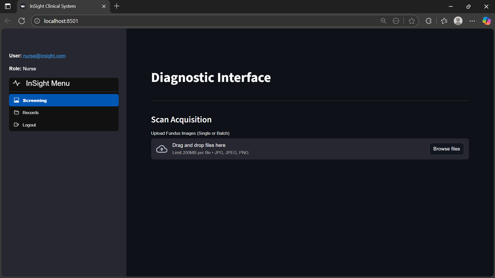
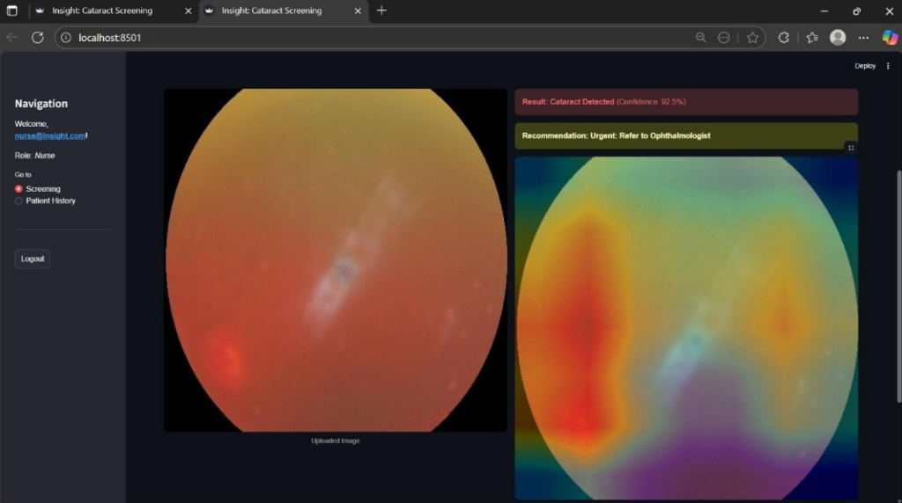
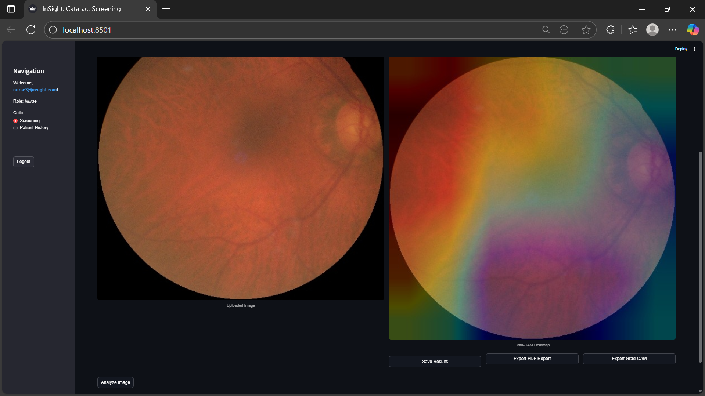
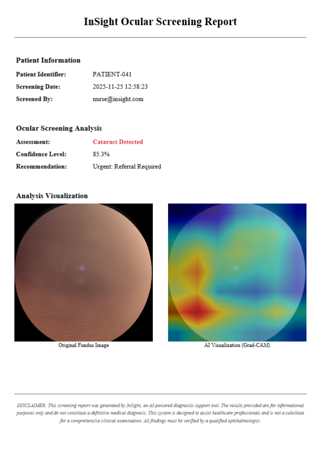
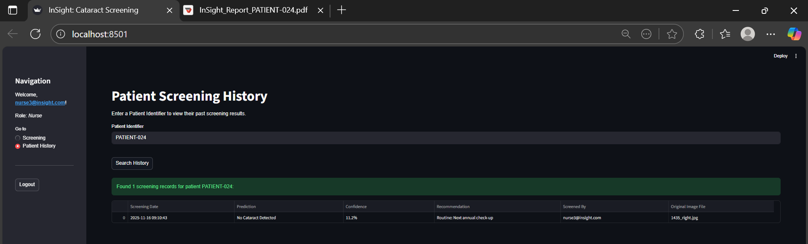

Clinical operator guide: InSight cataract screening
Welcome to the InSight clinical decision support system (CDSS). This guide provides step-by-step instructions for clinical operators, triage nurses, and healthcare assistants to perform rapid cataract screenings, review AI-generated visual evidence, and generate patient referral documentation.
Audience: Clinical operators, triage nurses, and healthcare assistants.
Important clinical disclaimer
InSight is an automated decision support tool designed to assist in triage prioritization in resource-constrained environments. It does not provide a definitive medical diagnosis and should never replace evaluation by a licensed ophthalmologist or eye care specialist.
Sign in to the system
Before you screen any patients, confirm that you have valid clinical credentials and that you know your assigned role, since available features depend on it.
- Open your web browser and go to the clinical portal URL (for example,
https://insight-screening.internalorhttp://localhost:8501). - On the welcome screen, enter your clinical credentials (email and password).
- Select Log In.
- Note: Your user role (Nurse or Doctor) determines which features are available. If you need access to the analytics dashboard, contact your system administrator.
Prepare retinal fundus scans
To ensure accurate screening and prevent processing errors, fundus photographs must meet the following intake standards:
- Supported formats:
.jpg,.jpeg, or.png. - Image quality: The pupil is centered, and the lens is free of external glare or eyelid obstruction.
- Validation check (the gatekeeper): The system automatically checks incoming files. If you upload a non-retinal image, such as a facial photo, a document, or an object, the system rejects the file and shows an
Invalid Image Typenotification.
Screen a single patient
After a scan meets the intake standards, screen it using the following workflow.
- In the left sidebar, go to Patient Screening > Single Scan.
- In the Patient Identifier field, enter the assigned patient ID (for example,
PAT-2026-0841). Don't enter personal details such as names or national identity numbers. - Select Browse Files, or drag and drop the file, to upload the retinal fundus image.

Figure 1: The InSight diagnostic interface ready for single or batch fundus image acquisition.- Select Run Screening Analysis.
- After processing completes (typically 3–5 seconds), review the screening card:
- Classification: Shows either Normal (no significant cataract indications) or Cataract Detected.
- Confidence level: Shows a percentage that indicates the model's certainty.
Read the Grad-CAM heatmap
When InSight classifies an image, it provides an explainable visual overlay called a Grad-CAM saliency map. This map helps you verify why the model flagged a scan.

Figure 2: Screening result displaying positive cataract detection (92.5% confidence) alongside the Grad-CAM saliency overlay and urgent referral notice.| Heatmap color | Clinical meaning | Recommended action |
|---|---|---|
| 🔴 Deep red / orange | Area of highest visual importance to the AI, typically localized lens opacity or clouding. | Visually inspect this exact anatomical region for cataract signs. |
| 🟡 Yellow / green | Moderate influence on the screening decision. | Treat as a secondary area of interest. |
| 🔵 Blue / violet | Minimal to no influence; normal ocular structures. | No action needed; no abnormalities are flagged here. |
Clinical tip
If the model flags Cataract Detected, but the red heatmap highlights an eyelash, an eyelid shadow, or a camera artifact rather than the lens or pupil, treat the result as inconclusive and recapture the scan.
Export a referral report as PDF
If a patient requires referral or physical documentation, operators can generate and download audit records directly from the results view:
- Review the generated Grad-CAM overlay and confirmation prompts.
- Select Export PDF Report to compile the clinical summary, or select Export Grad-CAM to download the standalone visual asset.

Figure 3: Action controls for saving results, exporting the referral PDF, and extracting Grad-CAM visual assets.The generated single-page PDF report formats patient metadata, quantitative confidence scores, diagnostic recommendations, and side-by-side retinal visualizations for specialist review.

Figure 4: Sample InSight clinical referral document generated for specialist handoff.Reviewing patient screening history
Operators can retrieve prior screening records and historical reports using the patient tracking module:
- In the left navigation menu, select Patient History.
- Enter the assigned Patient Identifier (for example,
PATIENT-024) and select Search History. - Review the historical record table for previous screening timestamps, classification outcomes, confidence scores, and operator IDs.

Figure 5: Historical screening log displaying prior intake records and diagnostic results.Troubleshoot common intake issues
| Problem | Probable cause | Corrective action |
|---|---|---|
Invalid Image Type error banner |
The image failed the pre-validation gatekeeper check, for example, a blurry scan or a non-fundus picture. | Confirm that the file is a clean fundus scan of the eye, not an external camera photo. |
File Size Exceeded alert |
The scan resolution exceeds the maximum upload limit, typically 10 MB. | Compress or resize the image before you upload it. |
| Processing spinner freezes | A temporary network interruption occurred between the terminal and the backend service. | Refresh your browser window and retry the upload. If the issue persists, contact IT support. |
Related resources
- Developer and API reference: Endpoint specifications, request and response formats, and integration details.
- IT support: Contact your system administrator for access, credential, or connectivity issues.